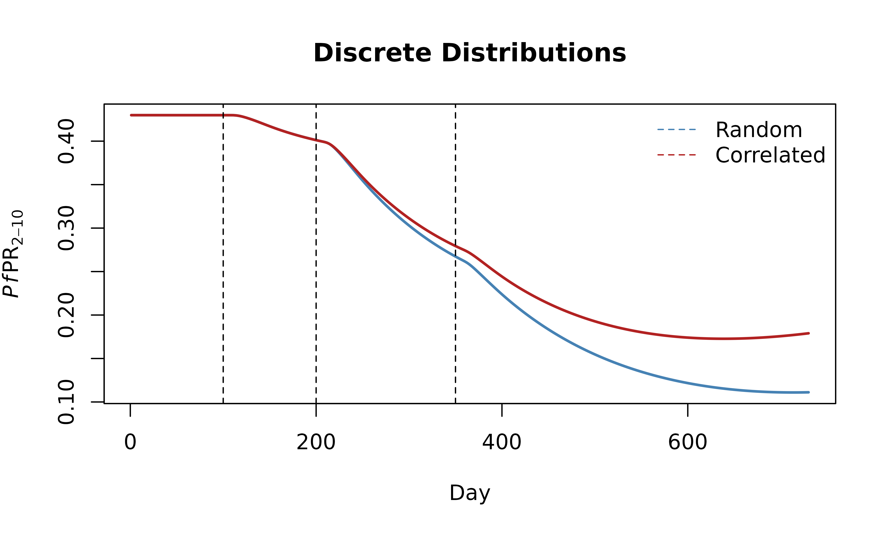
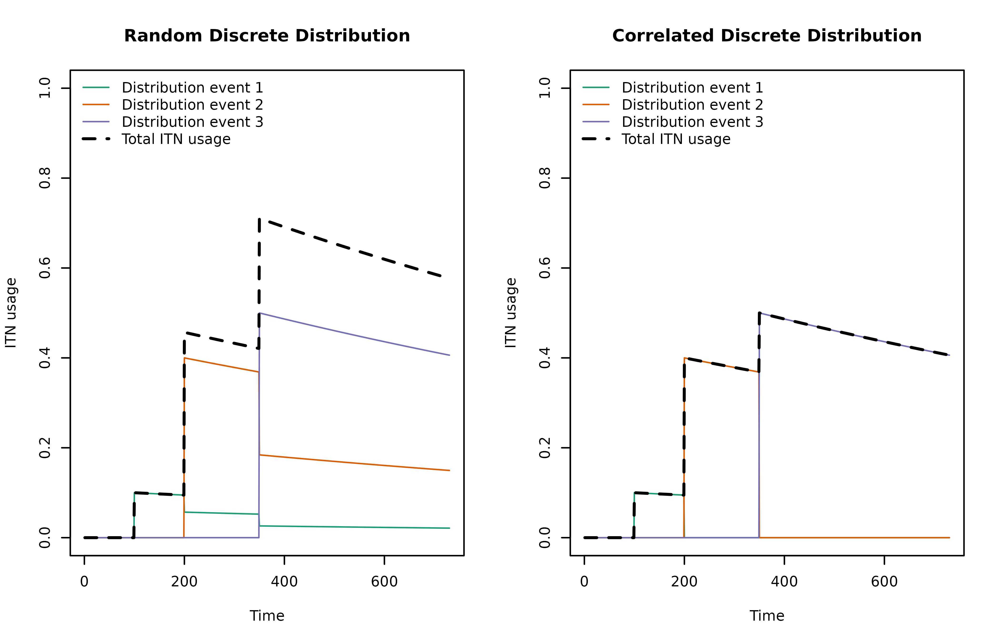
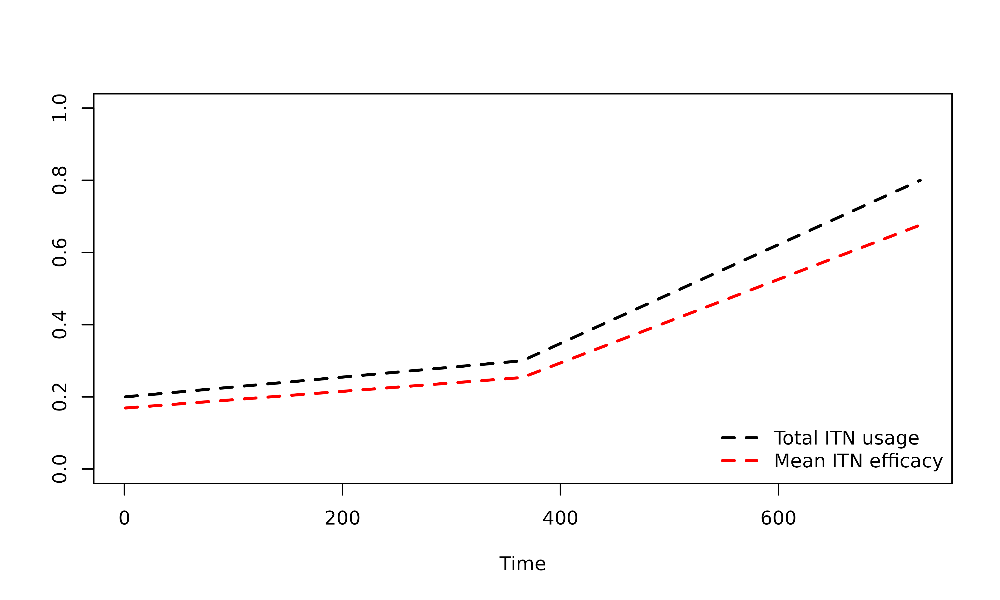

Insecticide treated nets (ITNs) can be introduced into a simulation
using the set_bednets() function.
Introduction
In malariasimple, ITNs interrupt the feeding cycle of
mosquitoes. Upon attempting to feed on a human protected by an ITN,
three things can occur:
- The mosquito successfully feeds and continues to oviposit (probability = )
- The mosquito dies (probability = )
- The mosquito survives the feeding attempt, but is repelled by the net and searches for a new host (probability = )
Hence, the effectiveness of an ITN intervention depends on how many
people are currently using ITNs and how successful those ITNs at a given
time at killing or repelling mosquitoes. These factors can be
parameterised using the set_bednets() function.
Parameters
Efficacy of an ITN distribution is assumed to wane over time by two mechanisms:
-
ITN insecticide decay. Decay is assumed exponential
and is defined by its half-life in days
gamman -
ITN loss. The model assumes that ITNs are retained
for
retentiondays, after which the net is no longer used. This is a deterministic approximatation ofmalariasimulationwhere net retention varies between individuals, but are kept for an average ofretentiondays.
Three more parameters are required to fully parametrise the ITNs.
-
dn0Probability of mosquito dying upon encounter with brand new net -
rnProbability mosquito being repelled upon encounter with brand new net -
rnmProbability of mosquito being repelled upon encounter with old net (fully decayed insecticide)
Forms of ITN Distribution
There are various assumptions regarding the way that ITNs are
distributed in malariasimple.
1. Discrete
This is the default. The model assumes that ITNs are distributed on
discrete distribution events (days) to a specified
proportion of the population (coverages).
Within this assumption, we can also choose how to decide who gets a net on each successive round.
-
distribution_type = "random". ITNs are distributed randomly during each event, and probability of receiving a net is unrelated to whether you have received a net previously. This is equivalent to correlation = 0 in malariasimulation. -
distribution_type = "correlated". We assume that some individuals are more ‘accessible’ by public health institutions than others. In this case, new nets are first distributed to those who have previously received a net and only given to new individuals in the case of expanded coverage.
Note: Assuming ‘random’ distribution can force the size of the ITN compartment to be very large. This can increase the numerical error introduced when we synthetically reduce the effectiveness of ITNs to account for periods of lower coverage, especially at high EIRs.
Using set_bednets() with discrete distribution
n_days <- 2 * 365
## ------------------ Define ITN parameters --------------------------
itn_days <- c(100, 200, 350) #Days on which ITN distribution events occur
itn_cov <- c(0.1, 0.4, 0.5) #Proportion of the population who receive an ITN on each distribution event
gamman <- 2.64 * 365 #Half-life of insecticide
retention <- 5 * 365 #People keep their nets for 5 years
## ------------- Set up malariasimple parameters ----------------------
#Random distribution
discrete_params_rand <- malariasimple::get_parameters(n_days = n_days) |>
malariasimple::set_bednets(
days = itn_days,
coverages = itn_cov,
gamman = gamman,
retention = retention,
distribution_type = "random"
) |>
malariasimple::set_equilibrium(init_EIR = 10)
#Correlated distribution
discrete_params_corr <- malariasimple::get_parameters(n_days = n_days) |>
malariasimple::set_bednets(
days = itn_days,
coverages = itn_cov,
gamman = gamman,
retention = retention,
distribution_type = "correlated"
) |>
malariasimple::set_equilibrium(init_EIR = 10)
## ---------------------- Run simulation ------------------------------
discrete_rand_out <- malariasimple::run_simulation(discrete_params_rand) |> as.data.frame()
discrete_corr_out <- malariasimple::run_simulation(discrete_params_corr) |> as.data.frame()
## ----------------------- Plot -------------------------------------
plot(discrete_rand_out$time, discrete_rand_out$n_detect_730_3650/discrete_rand_out$n_730_3650,
type = "l", lwd = 2, col = "steelblue",
main = "Discrete Distributions",
xlab = "Day", ylab = expression(paste(italic(Pf),"PR"[2-10])))
lines(discrete_corr_out$time, discrete_corr_out$n_detect_730_3650 / discrete_corr_out$n_730_3650,
lwd = 2, col = "firebrick")
abline(v = itn_days, lty = 2)
legend("topright",
legend = c("Random", "Correlated"),
col = c("steelblue", "firebrick"),
lty = c(2,2), bty = "n")
Visualising discrete parametersset_bednets() tracks the usage and average insecticide
decay from each distribution event. ITN usage can be visualised using
the intermediate function get_itn_usage_mat(). Because the
model only has one compartment for each intervention, the model takes
the total usage at each time point when running the simulation. Below,
we plot the input model assumptions.
## ------------- Return usage and decay matrices ----------------------
usage_mat_rand <- get_itn_usage_mat(itn_days, itn_cov, retention, n_days, distribution_type = "random")
usage_mat_corr <- get_itn_usage_mat(itn_days, itn_cov, retention, n_days, distribution_type = "correlated")
## ----------------------- Plot --------------------------------
t <- 1:n_days
colours <- c("#1B9E77", "#D95F02", "#7570B3")
par(mfrow = c(1, 2), cex = 0.6)
#Usage plot (random)
matplot(t, usage_mat_rand[, seq_along(itn_days)], type = "l", lty = 1, col = colours, ylim = c(0,1),
xlab = "Time", ylab = "ITN usage", main = "Random Discrete Distribution")
lines(1:n_days, discrete_params_rand$itn_eff_cov_daily[2:(n_days+1)] * discrete_params_rand$max_itn_cov,
col = "black", lwd = 2, lty = 2)
legend("topleft",
legend = c("Distribution event 1", "Distribution event 2", "Distribution event 3", "Total ITN usage"),
col = c(colours, "black"),
lty = c(1, 1, 1, 2),
lwd = c(1, 1, 1, 2),
bty = "n")
#Usage plot (correlated)
matplot(t, usage_mat_corr[, seq_along(itn_days)], type = "l", lty = 1, col = colours, ylim = c(0,1),
xlab = "Time", ylab = "ITN usage", main = "Correlated Discrete Distribution")
lines(1:n_days, discrete_params_corr$itn_eff_cov_daily[2:(n_days+1)] * discrete_params_corr$max_itn_cov,
col = "black", lwd = 2, lty = 2)
legend("topleft",
legend = c("Distribution event 1", "Distribution event 2", "Distribution event 3", "Total ITN usage"),
col = c(colours, "black"),
lty = c(1, 1, 1, 2),
lwd = c(1, 1, 1, 2),
bty = "n") 
2. Continuous
The model assumes that ITNs are continually distributed with
individuals replacing their nets every retention days.
Using set_bednets() with continuous distribution
## ------------------ Define ITN parameters --------------------------
itn_coverage_data <- data.frame(day = c(1, 365, 2 * 365), cov = c(0.2, 0.3, 0.8))
daily_continuous_cov <- approx(itn_coverage_data$day, itn_coverage_data$cov, xout = 1:n_days)$y
## ------------- Set up malariasimple parameters ----------------------
continuous_params <- malariasimple::get_parameters(n_days = 2 * 365,
age_vector = c(0, 1, 2, 5, 10, 20, 40, 60, 80) * 365) |>
malariasimple::set_bednets(continuous_distribution = TRUE,
daily_continuous_cov = daily_continuous_cov) |>
malariasimple::set_equilibrium(init_EIR = 5)
## ---------------------- Run simulation ------------------------------
continuous_out <- malariasimple::run_simulation(continuous_params) |> as.data.frame()
## ----------------------- Plot -------------------------------------
plot(continuous_out$time, continuous_out$n_detect_730_3650/continuous_out$n_730_3650,
type = "l", lwd = 2, main = "Continuous Distribution",
xlab = "Day", ylab = expression(paste(italic(Pf),"PR"[2-10])))Visualising continuous parameters
Under the continuous assumption, insecticide decay is considered
constant (equal to mean decay over retention period). ITN
coverage is input directly as a daily time series
daily_continuous_cov.
Below we overlay the total ITN usage
(daily_continuous_cov) with the mean ITN efficacy:
the daily probability that a host-seeking mosquito is killed or repelled
(1 - s_itn_daily). This combines coverage with the
(constant) mean insecticide effect, so it sits below the usage
curve.
## ----------------------- Plot --------------------------------------
par(cex = 0.8)
plot(
1:n_days,
daily_continuous_cov,
type = "l",
xlab = "Time",
ylab = "",
ylim = c(0, 1),
lty = 2,
lwd = 2
)
lines(
1:n_days,
1 - continuous_params$s_itn_daily[2:(n_days + 1)],
col = "red",
lty = 2,
lwd = 2
)
legend(
"bottomright",
legend = c("Total ITN usage", "Mean ITN efficacy"),
col = c("black", "red"),
lty = c(2, 2),
lwd = c(2, 2),
bty = "n"
)